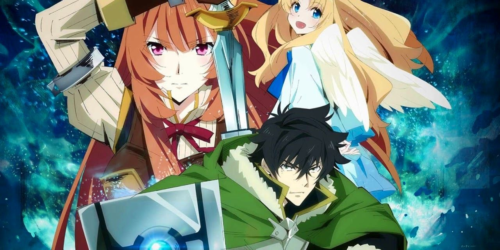

Inuyashiki: Last Hero is an anime based on Astroboy when a human dies and a robotic copy is created for their replacement. The anime series revolves around a 58 year old man named Inuyashiki Ichiro who is undergoing hardships in his life. One evening in a deserted park, he is struck by an explosion of an unknown extreaterrestial origin, and his body is replaced by a strong and lively human mechanical body.
On that same day another perosn by the name of shishigami Hiro had the same fate as Ichiro and was struck by the explosion. Shishigamu becomes a psychopath who goes around killing people with his "trigger finger" with the new abilities he discovered on the day of the explosion. The series follow these two people as they have shared the same experience and whos lives have changed. This anime is reccomended for people who enjoy action, drama and sci-fi anime, you can watch the trailer of Inuyashiki: Last Hero here.
Tokyo Revengers is an anime based on the Japanese manga that fits into the genre of action, drama and spernnatural. The anime follows the like of Takemichi Hanagaki who is a man who lives a boring life up until he finds out that his one and only ex-girlfrend he ever had, Hinata Tachibana had been killed by the Tokyo Manji Gang.
A day after being informed about her death from the news, he's standing on a train station platform and suddenly ends up being pushed over onto the tracks. As he thinks he's about to die, he closes his eyes and when he opens them back uo hes suddenly in a young Takemichi Hanagaki body 12 years into the past. Now that he's living in his prime time age, Takemichi has faith in himself that he can prevent a tragic event from recurring. You can watch the trailer of Tokyo Revengers here.

In world filled with giant humaniod man eating monsters,known as Titans.These creatures appered 100 years ago where humans found safety through the use of massive walls that surround the land they're within.Eren Yeager a young man who grew up within the walls wishes to join the survey corps in order to fight against the titans.This all changes when an intelligent titan called the Collasal Titan breaks down the wall.Which changes his life completely.
Humanity is cattle,and the Titans are wolves.This world follows the survery corps and their quest to wipe out the titans and restoring peace within their world.They go through a series of uncovering mysteries of the wall and titans within their world. here

Dragon Ball Z is a sequel to the original Dragon Ball series.As this time we follow the story of an adult Goku and new extraterresrial threats that he must up against to save the universe.This series allows an immersive new view of an olf series and expands on the world by creating more enticing arcs that viewers are sure to enjoy.
This includes one of Dragon Ball Z's recent movies that are critically acclaimed,as Goku face the god of Destruction Beerus.Within this movie of Dragon Ball Z Goku is purely tested on how far his skill as a character has come and how he develops to improve himself. here